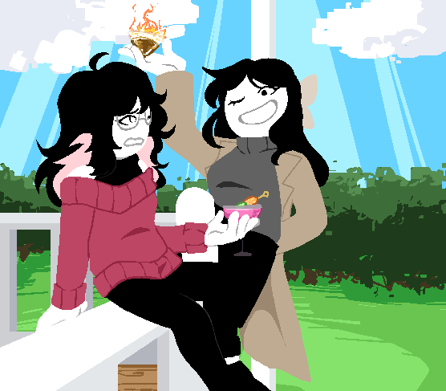

Pel, Coy

Pel and Coy were hanging out in Pel's front porch drinking a fruit cocktail that they have prepared
Coy: So what do you think this machine stuff is all about
Pel: aaaaa, I think it's just a way for Aegis to try to make Dusty and Apollo get along
Coy: Why would you say that, didn't they fight over text today because of the machine?
Pel: I feel like he will try to make them work together or something like that. Personally, I think them fighting here and there is fun.
Coy: I guess...
Coy: Well, do you want to go soon?
Pel: Yeah, oh I just got a text from piss chat
> Check piss chatGo Back